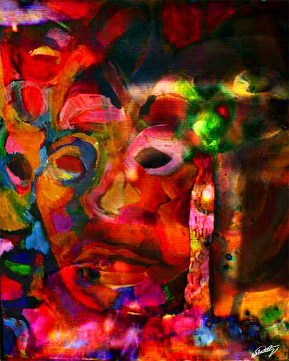
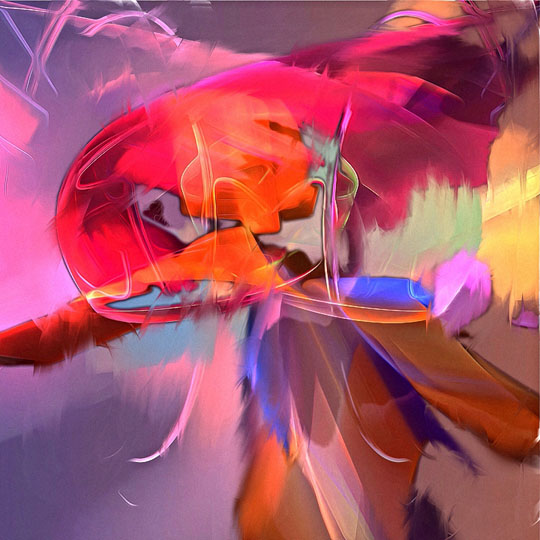
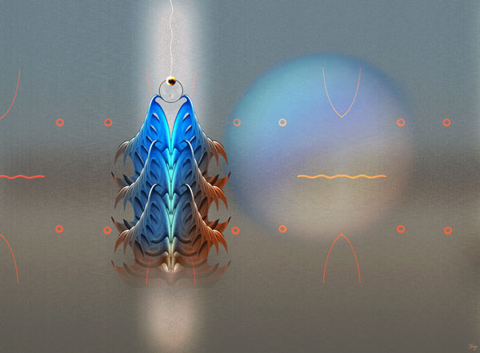
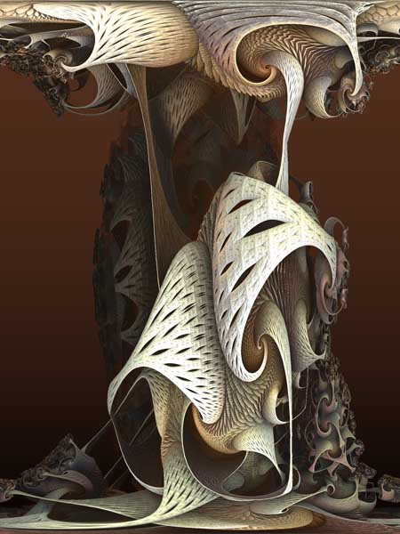
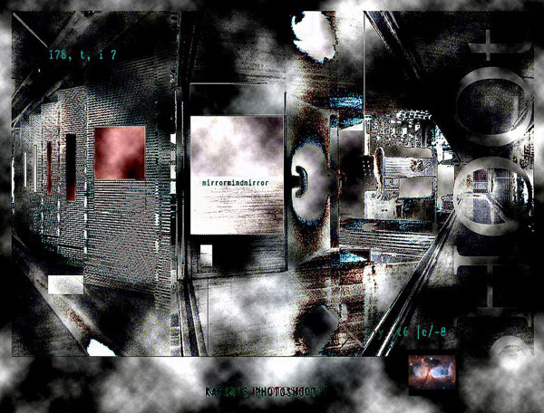
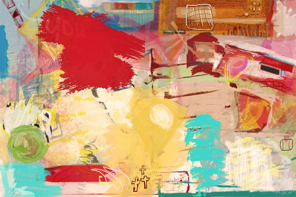
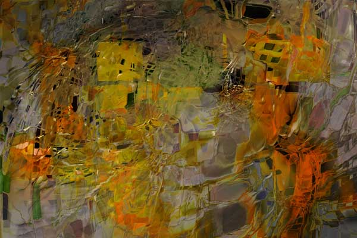

Click image to visit MOCA gallery where image resides
Fading Memories
by Celia Durand
11/21/2021
Color Is Skin Deep 
by Wil Watty
11/22/2021
Moth
by William H. Miller
11/23/2021
Hypostatization 
by Carolyn Frishling
11/24/2021
Sea of Illusion 
by Shige Yamada
11/25/2021
Image of the Day
Lines that Lead to dOrsay
by Fred Rowley
11/26/2021
Portabello 
by Rick Spixx (Rykk)
11/27/2021
Kafka's Photoshoot: Mirror Mind Mirror 
by Jan Kölling
11/28/2021
RT Series 1 - Untitled 
by Mary Sargent
11/29/2021
City in the Vortex 
by Vincenzo Corrado
11/30/2021